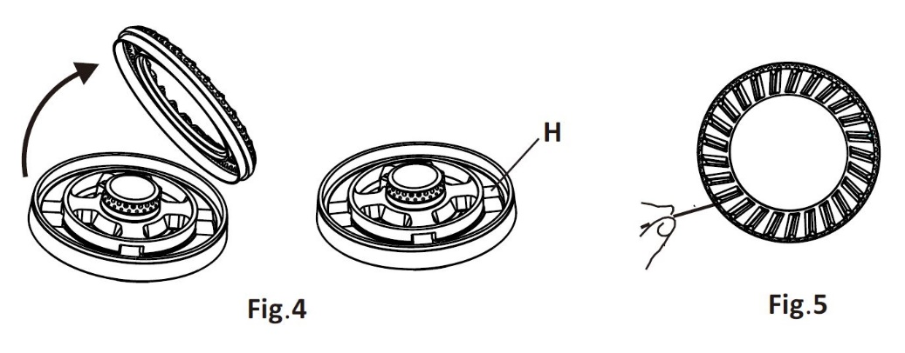
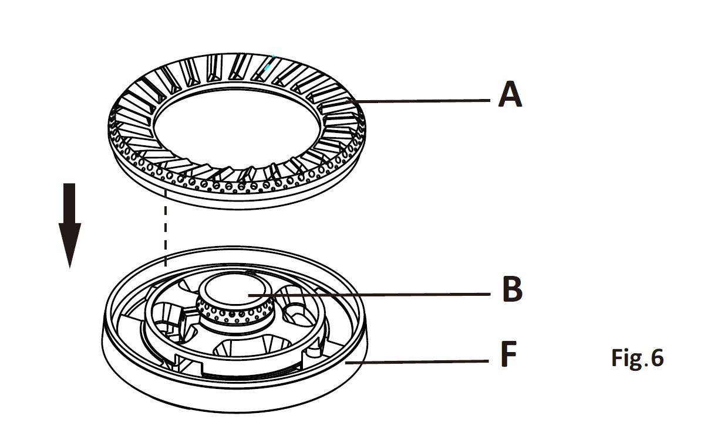
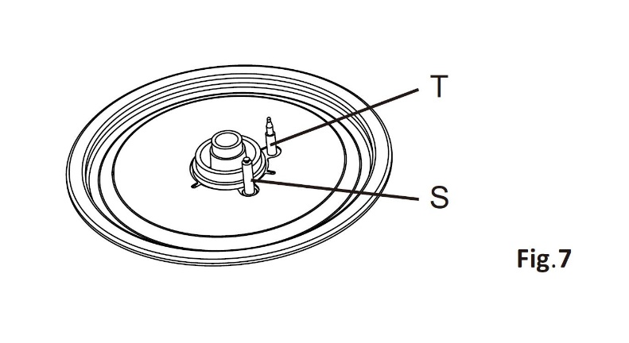
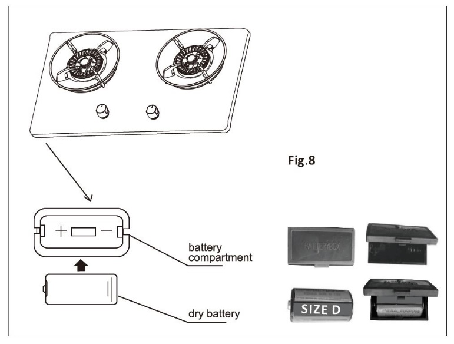
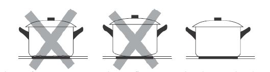
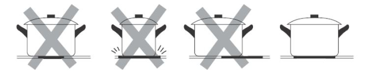

- You can wash the filter if you see lots of grease after cooking or you can wash once every 2 months.
- Soak the filter in water first and wash along the mesh with soft sponge. If there is too much grease, please clean it with mild detergent. Dry the filter thoroughly before putting back to the cooker hood.
- You can also refer to the product manual for more information.

- Yes, you can call our office number at 6286 3286 during our working hours, Mon to Fri, between 9am and 6pm (closed on 1 – 2pm(Lunch hour), weekends and Public Holidays) and provide us your cooker hood’s model number so that we can check the availability. If you do not know your model number, please take a picture and send to our service team via WhatsApp at 8655 5636. Upon confirmation of availability, you can come to our office to purchase. Our office address is 130 Joo Seng Road #05-05 Singapore 368357.
- No. we do not recommend to wash the fan as this includes dismantling and assembling of the fan which has to be done by professionals.
- Remove the burner caps and use a cotton bud or toothbrush to clean out any incrustations or dirt from the area marked “H” in Fig.4.
- Clean the slits of the burner caps with needle or very fine toothbrush to remove the dirt and carbon blocking the burner holes. (Fig.5) 
- After cleaning, the burners and the caps must be well dried and put back in correct position as shown in the image Fig. 6, to ensure safe operation. The burner cap A must follow the same lodgment as shown by the arrow (Fig.6). Please ensure the burner can rotate freely when correctly positioned in place. 
- Check that the ignition electrode “S” (Fig.7) is always clean to ensure trouble-free sparking. Check that the probe or thermocouple “T” (Fig.7) is always clean to ensure correct operation of the safety valves. Both the ignition electrode and the thermocouple must be very carefully cleaned with kitchen paper. 
- Check that the probe or thermocouple “T” (Fig.7) is always clean to ensure correct operation of the safety valves. The thermocouple must be very carefully cleaned with kitchen paper.
- Clear or remove thermocouple gas passage way blockage if any.
- Change battery if battery is flat. See point 3 on how to change battery.
- Please contact our service team for service request if the problem persists after cleaning or change battery. The thermocouple could be faulty and require change by our technicians.
- There is a battery compartment underneath the left side of the gas hob. This battery is the power supply for the automatic electronic ignition of gas burner.
- When the battery is weak, please change the battery which is a DC1.5 volt battery, size D. Do not use alkaline battery. Check for correct polarity (labels on the side of the battery compartment). 
- Remove the battery if the gas hob is not going to be used for a long time.
- In the event that the automatic ignition fails to operate, ignite the burner with a gas lighter.
- Please contact our service team for service request if the problem persists after changing battery. Other parts could be faulty and require change.
- Yes, you can wash with soft sponge and soapy water or non-abrasive products and dry thoroughly with soft and clean cloth.
- It is also recommended to clean up any spills as soon as possible. Cleaning and maintenance should be carried out after the appliance has turned cold especially when cleaning burner and the cast iron support. Avoid leaving alkaline or acid substances (lemon juice, vinegar etc.) on the surfaces.
- For everyday soiling on glass (fingerprints, marks, stains left by food or non-sugary spill-overs on the glass), switch the power to the cooktop off. Apply a cooktop cleaner while the glass is still warm (but not hot!). Rinse and wipe dry with a clean cloth or paper towel.
- When the power to the cooktop is switched off, there will be no ‘hot surface’ indication but the cooking zone may still be hot! Take extreme care.
- Heavy-duty scourers, some nylon scourers and harsh/abrasive cleaning agents may scratch the glass. Always read the label to check if your cleaner or scourer is suitable.
- Never leave cleaning residue on the cooktop as the glass may become stained and difficult to remove or even permanently damage the glass surface.
- For boil-overs, melts, and hot sugary spills on the glass, remove these immediately with a fish slice, palette knife or razor blade scraper suitable for induction glass cooktops, but beware of hot cooking zone surfaces. Switch the power to the cooktop off at the wall. Hold the blade or utensil at a 30° angle and scrape the soiling or spill to a cool area of the cooktop. Clean the soiling or spill up with a dish cloth or paper towel. Apply a cooktop cleaner while the glass is still warm (but not hot!). Rinse and wipe dry with a clean cloth or paper towel.
- For spill-overs on the touch controls, switch the power to the cooktop off. Soak up the spill. Wipe the touch control area with a clean damp sponge or cloth. Wipe the area completely dry with a paper towel.
- The cooktop may beep and turn itself off, and the touch controls may not function while there is liquid on them. Make sure you wipe the touch control area dry before turning the cooktop back on.
- Only use cookware with a base suitable for induction cooking. Look for the induction symbol on the packaging or on the bottom of the pan.
- You can check whether your cookware is suitable by carrying out a magnet test. Move a magnet towards the base of the pan. If it is attracted, the pan is suitable for induction.
- Cookware made from the following materials is not suitable: pure stainless steel, aluminium or copper without a magnetic base, glass, wood, porcelain, ceramic, and earthenware.
- Do not use cookware with jagged edges or a curved base. Make sure that the base of your pan is smooth and sits flat against the glass. 
- Please check that the base of your pan is the same size as the cooking zone. Use pans whose diameter is as large as the graphic of the zone selected. Using a pot that slightly wider will cause energy to be used at its maximum efficiency. If you use smaller pot, efficiency could be less than expected.
- Pot/pan base less than 140 mm could be undetected by hob whereas FH-ID5130 Right Big zone required at least 175mm pot/pan base to operate. Always centralise your pan on the cooking zone. 
- Always lift pans off the Induction hob – do not slide, or they may scratch the glass.
- Once Power on, you will hear a beep sound with power indicator light flickers and off indicating Standby mode. Press On/Off control for 2 seconds to start using. If there is no operation after turning on for 60 seconds, it will go to Power Off state. To resume operation, press the On/Off control for 2 seconds again.
- The display will automatically turn off after 2 minutes if no suitable pan is placed on it. Press On/Off control for 2 seconds to resume operation.
-
The “U” symbol means that the hob cannot detect the pan. This means that:
- you have not placed a pan on the correct cooking zone or,
- the pan you’re using is not suitable for induction cooking or,
- the pan is too small or not properly centered on the cooking zone. - No heating takes place unless there is a suitable pan on the cooking zone.
- The display will automatically turn off after 2 minutes if no suitable pan is placed on it.
- The controls could be locked. Please unlock the controls by touching and holding the Lock Control for about 2 seconds.
- The controls respond to touch, so you don’t need to apply any pressure.
- Use the ball of your finger, not its tip.
- You will hear a beep each time a touch is registered.
- Make sure the controls are always clean, dry, and that there is no object (e.g. a utensil or a cloth) covering them. Even a thin film of water may make the controls difficult to operate.
- This is due to the bonding agent used for the insulating panels within the oven.
- Please run up the new empty product with the conventional cooking function at 250 ℃ and 90 minutes to clean oil impurities inside the cavity.
- During the first use, it is completely normal that there will be a slight smoke and odors.
- If it does occur, you merely have wait for the smell to clear before putting food into the oven.
- Use a dish cloth which is soaked with warm soapy water and twist dry to clean, and then dry with a soft cloth. Do not use glass cleaner or a glass scraper.
- Clean the cooking compartment after each use. This will ensure that dirt cannot be baked on.
- Always remove flecks of lime scale, grease, starch and albumin (e.g. egg white) immediately.
- Remove flecks of food with sugar content immediately, if possible, when the fleck is still warm.
-
Do not use:
- Harsh or abrasive cleaning agents.
- Cleaning agents with a high alcohol content.
- Hard scouring pads or cleaning sponges.
- High-pressure cleaners or steam cleaners.
- Special cleaners for cleaning the appliance while it is hot.
- Ovens need to be switched on periodically to heat up and regulate the heating elements to prevent oven to trip due to moisture accumulated in the heat elements causing direct short circuit.
- Faulty components will also cause short circuit.
- Do not try to resolve the tripping problem by yourself. Please call our office number at 6286 3286 during our working hours, Mon to Fri, between 9am and 6pm (closed on weekends and Public Holidays) for assistance.
- The bulb needs to be replaced and can be purchased from our office. Please call our office number at 6286 3286 during our working hours, Mon to Fri, between 9am and 6pm (closed on weekends and Public Holidays) and provide us your oven’s model number so that we can check the availability. If you do not know your model number, please take a picture and send to our service team via WhatsApp at 8655 5636. Upon confirmation of availability, you can come to our office to purchase. Our office address is 130 Joo Seng Road #05-05 Singapore 368357.
- Please follow instructions in the manual to replace the bulb in the oven.
- Please refer to your product manual for detailed information. If you have misplaced your manual, you can also visit our website to download the online copy. For models that have been discontinued, please email to fit@fujioh.com.sg so that we can email you the soft copy.